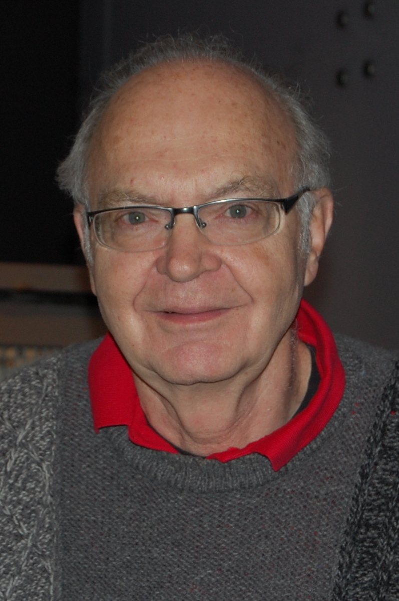

Claude Shannon
Claude Shannon was an American mathematician, electrical engineer, and cryptographer known as the "father of information theory." His groundbreaking 1948 paper established the mathematical foundations of digital communication and data compression, making modern telecommunications and computing possible.
Linus Torvalds
_(cropped).jpeg)
Linus Torvalds is a Finnish-American software engineer best known for creating the Linux operating system kernel in 1991. Linux has become the backbone of servers, supercomputers, smartphones, and much of the internet, and Torvalds continues to oversee its development.
Vint Cerf
Vint Cerf is an American computer scientist recognized as one of the "fathers of the Internet." Along with Bob Kahn, he co-designed the TCP/IP protocols that form the foundation of the modern internet, enabling global data exchange and communication.
Donald Knuth

Donald Knuth is an American computer scientist, mathematician, and professor emeritus at Stanford University. He is best known for authoring the multi-volume work "The Art of Computer Programming" and for creating the TeX typesetting system, both of which have had a profound impact on computer science and digital publishing.